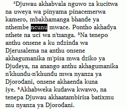
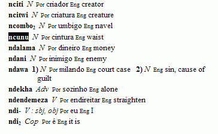

Creating a new dictionary entry
Translation Editor stores data and text in the same project used by other FieldWorks programs, for example, Language Explorer.
-
You can create a new dictionary entry from the vernacular text in Translation Editor.
-
When you learn more about the word, you can enter more data in Language Explorer.
Here are examples of vernacular Scripture text in Translation Editor and lexical data in Language Explorer.
